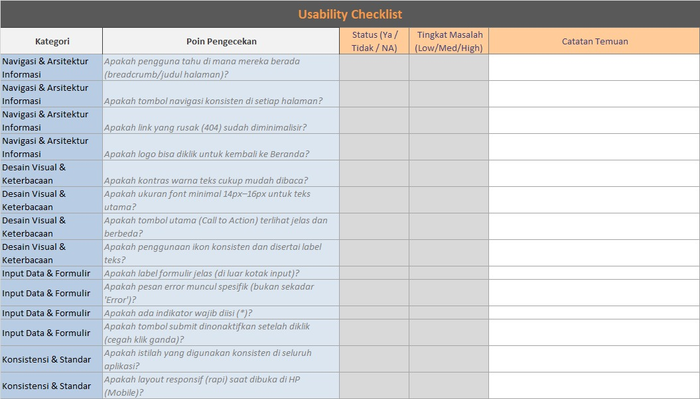

Tempat preview. Kamu bisa ganti ini dengan <img> atau embed PDF.
Toolkit • Tugas SE-02
UX Research Toolkit
Membantu tim melakukan UX Research secara terstruktur: mulai dari menyusun Persona, memetakan User Journey Map, hingga mengecek Usability lewat checklist.
Praktis
Format siap isi untuk kebutuhan riset cepat.
Terstruktur
Alur riset dari data → insight → keputusan.
Reusable
Dokumen bisa dipakai ulang untuk proyek lain.
Tentang Toolkit
Ringkasnya: ini “kotak alat” untuk riset UX.
UX Research Toolkit adalah kumpulan template, checklist, dan panduan singkat agar proses riset UX bisa dilakukan secara konsisten. Dengan toolkit, tim punya struktur kerja yang jelas—mulai dari mengidentifikasi tipe pengguna, memetakan journey, sampai mengevaluasi masalah usability.
- Meminimalkan riset “asal tanya” tanpa dokumentasi.
- Membantu tim menyusun insight yang bisa ditindaklanjuti.
- Mudah diadopsi untuk proyek kecil sampai menengah.
Masalah yang sering terjadi
- Metode riset dipilih tanpa pertimbangan yang jelas.
- Hasil riset tercecer dan tidak standar.
- Kesulitan menjelaskan “kenapa fitur ini dibutuhkan”.
Toolkit membantu mengubah proses itu menjadi alur yang tertata.
Komponen Toolkit
3 komponen utama yang saling terhubung.
1. Template Persona
Untuk merangkum tipe pengguna utama: tujuan, kebutuhan, pain points, dan konteks.
- Profil singkat pengguna
- Goals & pain points
- Kebutuhan fitur/informasi
2. User Journey Map
Untuk memetakan langkah pengguna dari awal sampai selesai, beserta emosi & kendalanya.
- Tahapan journey
- Touchpoints
- Pain points & peluang
3. Checklist Usability
Untuk mengecek apakah sistem mudah dipahami, konsisten, dan minim error.
- Navigasi & konsistensi
- Kejelasan informasi
- Feedback & error handling
Cara Menggunakan
Alur sederhana: data → persona → journey → cek usability.
- Kumpulkan data: wawancara singkat / observasi / survei kecil.
- Isi Persona: rangkum pengguna utama dan masalahnya.
- Buat Journey Map: susun tahapan, touchpoint, pain point, peluang.
- Checklist Usability: cek skenario dan catat temuan.
- Rangkum insight: prioritas perbaikan (quick wins vs. effort besar).
Tips cepat
- Mulai dari 1 persona dulu (yang paling dominan).
- Journey map 5–7 langkah sudah cukup untuk mini-riset.
- Checklist usability fokus ke skenario paling sering dipakai.
- Catat 3 hal: masalah, dampak, saran perbaikan.
Tambahkan kolom “evidence” (kutipan/screenshot) biar lebih kuat.
Contoh Screenshot
Klik salah satu kartu untuk melihat preview.



Download Toolkit
Download Template Toolkit disini!
Berikut paket dokumen yang dapat diunduh. Silakan sesuaikan formatnya (Docs/Sheets/PDF).
Kontak / Feedback
Isi form singkat untuk masukan atau permintaan akses (opsional).
FAQ
Jawaban cepat untuk pertanyaan umum.
Apakah toolkit ini harus dipakai semuanya?
Tidak harus. Kamu bisa mulai dari Persona, lalu Journey Map, lalu checklist usability. Hasilnya lebih kuat jika dipakai berurutan.
Apakah ini menggantikan wawancara pengguna?
Toolkit membantu prosesnya, bukan menggantikan. Data idealnya tetap berasal dari wawancara/observasi/survei kecil.
Bagaimana kalau tim tidak punya banyak waktu?
Pakai versi ringkas: 1 persona, 1 journey map 5 langkah, dan checklist usability untuk 1 skenario utama.
Tim
Informasi tim pengembang.
Abid Lu'ay Raihan Taufik
Peneliti Literatur
NIM : 312210401
Rafi Maulana Firdaus
Perancang Produk
NIM : 312210382
Afrizal Fajrianto Anggara Sakti
Dokumentator & Presenter
NIM : 312210449